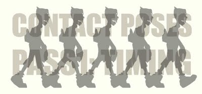

part 2 is also available ->
(Note: skip to Creating Extremes if you hate blog verbiage)

I have been hanging around on the 11 Second Club animation forums for the past couple of months. I genuinely enjoy the vibe of that site. The folks responsible for putting the site together have faithfully carried forward the goal of its predecessor, the 10 Second Club, only better.
One benefit has been reading the questions and requests of animation students who are wanting to learn and improve but feel lost when trying to develop skills an understanding. If like me you teach animation, hanging out in the 11 Second Club is a great way to take the pulse of a large community of animation students and prepare yourself for their needs.
One item that has come up in the forums at the 11 Second Club regularly is "how do I fix my walk cycle?"
As an artist it is very important to pay attention to craft. A walk cycle, whether created in 2D or in 3D (CGI) is just such a fundamental to master... including for animators who like to venture into more experimental approaches of the art form.

The cover of Animator's Survival Kit by Richard Williams
For anyone interested in the subject, check out the exhaustive description of walk cycles provided by Richard (hasn't he been knighted yet?) Williams. Don't let what looks like simple 2D drawings fool you. There is a ton of information for any animator in William's book. If you own a copy of that book, open it to page 102 and start reading. This post here is largely a rehash of what is included in that text filtered slightly to assist newer 3D animators.
A generic (vanilla) walk cycle broken down into its parts on page 108. © Richard Williams 2001
Above is an example of how Williams explains a walk cycle in basic poses on page 108 of his book. Strangely, the information is neither new, or revolutionary and yet for some reason lots of new animators who crave this information fail to recognized that it is laid out in complete detail in The Animator's Survival Kit. Perhaps the minimalist drawings make people think not much is there. Or maybe it is an example of the Joshua Tree Principle. Regardless of why it gets missed by so many, his book has all you need for a creating good looking walk cycles. Loads of it, and then some. If you are learning animation buy the book or check it out from a library.
I am going to outline some walk cycle construction here and follow up with more detailed information on the subject with subsequent posts. What I am attempting to describe is what to do if you are trying to translate Williams' information into 3D using a character rig available for Maya. For this series I am using a free rig called Geek, created by Kiel Figgins. Model was created by Adam Schuman.
Hopefully users of other software and/or animation mediums will find this helpful too.
Also, I will describe a work method as well as what NOT to do. This information is based creating countless walk cycles for demonstration and viewing a much greater number of walk cycles from first time animators. First, some basic terms and assumptions...
Timing and Spacing
Working in a pose to pose method allows you establish your timing early in the process of creating an animated sequence. After your timing has been established you can then create the poses that will define the spacing between your timing poses. The spacing poses will depend on your timing poses so you must nail down the timing poses first. Fussing with inbetweens comes much later in the process and is entirely dependent on the quality of poses you create first. We will start with the timing poses only.
So, what constitutes a timing pose? A timing pose defines an extreme in the movement that occurs at a specific moment. In this case, we will use the moment when the heel of the front foot first contacts the ground. We will call this pose the contact pose. We will not be using the term key pose for this because key poses are story telling poses and not necessarily extremes in movement. This distinction also comes form Richard Williams.
One additional note, this will be a stationary (treadmill style) walk cycle. Most 3D animators start with this type of walk cycle, most traditional 2D animators don't. Different mediums sometimes require different approaches to the same goal.
Animating in Passes
This work method allows you to start with the most important elements first, leaving less important details until later. For a great description of animating in passes check out notes on how Shawn Kelly organizes his work flow. This post is a description how I create my first pass for a normal 3D walk cycle exercise. Later posts will cover later animation passes in my process.
Creating Extremes
Although animating for 24 frames per second, I start by limiting my work environment to only three frames in the time line. This is an easy way to make sure my animation only contains poses that I create and nothing more. Ultimately, the cycle will be 24 frames in length (from frame 1 to frame 25) and will include two steps. First, create a contact pose, then an opposing contact pose, and also create a copy of the original contact pose.
For a seamless loop first and last poses in the cycle must be identical. Any changes made to the first pose must also be made to the last since they are in fact the same.
A generic contact pose demonstrating a modest gait for the character.
Start with the feet and hips of your character. For all walk cycles, keep the angle of the legs, and distance between the feet modest. A giant gait in a walk is unnatural and will look awkward. In general, if it is difficult for you to move or hold yourself like your character is posed, then the pose is wrong and should be adjusted. A natural walk, or even a unique walk, will have a modest gait... to do otherwise will create poses more appropriate for a run cycle.
Creating a good contact pose requires balancing the feet positions with the hip position.
Using a 3D rig with IK (inverse kinematic) legs means that the knees are controlled by where you place the feet relative to the hips. If you move a foot, you will have to adjust the hips as well. If you adjust a custom foot control that lifts the toes, bends the ball, or lifts the heel, the knee will change angle accordingly. You have to balance all of these elements by watching the shape created by the different parts in combination.
Changing small details such as the angle of feet will improve you contact poses.
To avoid giving your character a robotic look turn the feet outward for the default positions.
Front leg must be straight at the contact pose.
Shape change is a hugely important subject in animation, and yet for some odd reason it rarely gets discussed. Your initial pose, the contact pose, will set up a shape of your character that will change, giving the necessary perception of weight and solid forms. What you are setting up in the contact pose is stretch of the front leg. This will be followed by squash of the font leg with a later part of the process with a down pose.
Create a Unified Whole, Not Separate Pieces
It is extremely important to remember that this is supposed to be a living being, not an assembly of parts and pieces. You have to pay close attention to how the connected elements influence each other.
While hips twist only a little, they are not locked in one spot while the feet move forwards and back.
For instance, if the left foot is forward then the left hip will also be forward.
A small amount of counter movement will ad a lot of flexibility to the torso.
If the left hip is tilted up slightly, then the left shoulder will have counter balance this by tilting down. In general the shoulders will move in opposition to the hips.
Start General, Work Towards Details
Line of action (some animators call it path of action) is a central line the moves through the character and defines the direction, attitude, and speed of movement.
It is important to establish a clearly defined line of action on your first pose and craft the details of your pose to match that line. A forward tilt in the line with create a sense of forward movement.
Creating a line of action that has a slight arc or bend helps to give your character pose more life-like appeal. In most cases, and especially for this type of exercise you should avoid putting a sharp bend in the line of action.
Touch Everything, Key Every Attribute
While creating your initial extremes you should key all attributes of your character. If you don't later in the process the software will inbetween some elements differently than others giving you very unpredictable results. Keying all attributes establishes what position you want all elements of you character to have relative to each other for that one pose.
The default position for most hands on 3D rigs is usually flat, like a pancake. Its unappealing and leaving such details untouched on the first pass doesn't save you any time in the animation process.
You should define the pose of your character down to the finger tips.
Create a relaxed pose for the hand early in the process.
Posing the hands and fingers into to something that resembles a natural pose will speed up the process of creating such details for pose created later.
Your process in 3D animation has to eliminate opportunities for the software to create movement or poses without you. Learn how your rig is setup and use its structure to key all elements simultaneously. The Geek rig for instance is setup to have a single node called "Geek_CTRL" that drives virtually every other attribute on the rig. Keying all requires that you pay attention to what position exists for each element, lest you allow the rigs default (stiff/rigid) positions to define your work.
Build Overlapping Action into Your Poses
You will want all forms in your character to appear flexible. Flexibility can be a challenge to create in animation and especially in 3D. An important element of overlapping action in a walk cycle is the difference between the arms and legs. While the legs reach an extreme at the contact pose, the arms don't. They will reach an extreme in their swing on the down pose which we will create later.
Fingers and hands should drag behind the movement of the arms.
One primary way to make a character appear flexible is through overlapping action and "drag".
A very small amount of change in finger positions can ad life to your walk.
Drag is a term used to describe how some smaller elements resist, or stay behind the larger movement... they get dragged along, so speak.
Feet can demonstrate drag as well.
Most often drag shows up in the extremities of the character: hands, toes, and head, etc. although it can also influence the center or core of the character as well. Later installments on this subject will demonstrate some of this.
Things to Avoid in Your First Pass
1. Front knee bent on the contact pose.
2. Large, awkward, and unnatural gait.
3. Perfectly vertical line of action.
4. Stiff and lifeless torso.
5. Straight arms, flat feet, and toes.
6. Default, stiff, and flat pose for hands and fingers.
7. The arms at extreme same pose as for feet.
8. Rushing this first pass.
Conclusion to Part 1
Basic Walk Cycle: Part 1 from Erik Westlund on Vimeo.
Here is a simple example of the contact poses from several angles after they were timed out for 2 steps per second which is an average, "business-like" walk.
If you actually read Richard Williams' book you will learn a lot more than walk cycles. He explains how such fundamental concepts as timing and spacing affect everything. He also explains priorities, as in what to start working on now, what to leave until later. If you want to get going in animation, read his book. I tell students to sleep with it under a pillow. It gets a laugh, but also makes the point that there is a lot of information to absorb from his text.
Oh, and like a skilled musician, practice your "scales". I tell them than too.
If you are just curious about this subject and want more right now, check out some excellent alternative explanations for creating walk cycles:
Dermot O' Connor
Mike Brown
Larry Lauria
Greg Kyle by way of Shawn Hull
Andrew Jaremko
Part 2 is now available. Jump to part 2 in this series ->
-e

{kind=link}
{kind=link}
{kind=link}
{kind=link}
{kind=link}
{kind=link}
{kind=link}
{kind=link}
{kind=link}
{kind=link}
{kind=link}
{kind=link}
{kind=link}
{kind=link}
{kind=link}
6 comments:
Thanx alot!
This is great help....Really nice in-depth explanation for a newbie like me...
Do continue this walk tutorial forward....
Can I ask doubts over here?
Ratul
My pleasure rd sarna!
I've seen some of the exercises that you have posted in the past... overlapping action and ball bounce. Good stuff, simple exercises that are perfectly appropriate.
You have doubts? What doubts?
If I can make this tutorial better just let me know what your concerns are. Either I'll address questions in the comments or in follow up tutorials.
I wanted to know that if we keep the front leg straight in the contact pose won't there be a pop in the knees? I did a walk cycle a few months ago and faced this problem. Although I didn't have a clue about the principles at that time!
thnx
Ratul
Good question Ratul! While knee popping can be a problem in cg walk cycles, my experiences have been only good regarding this method for creating a contact pose.
example 1
example 2
The straight leg sets up a nice, stretched line that will squash on the "down pose" a few frames later. The frames in between contact and down will allow you to create necessary easing so that the transition doesn't "pop".
In addition, the straight leg provides a visually identifiable moment when foot makes contact with the ground. Having the knee bent at this pose seems to make the contact point hard to read visually. All will be explained, and demonstrated in follow up posts.
More questions are welcome. Thanks for dropping by.
Wow ! Quite a detailed article you have here. Be sure to read it up in detail when I get into some animation of my own. :]
thanks blauereiter,
heh... and its only part one. Writing and illustrating part 2 is kicking my ass. And I've got at least 2 more after that!
I find walk cycles are central to the subject of character animation, like a lens through which you can see the core of the subject relating to movement.
I would like to get your response when you get a chance to go through it in detail.
Thanks for dropping by.
BTW: loving you photography work.
Post a Comment
Links to this post
Create a Link